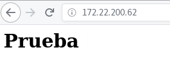

Ciclo de vida de nuestras aplicaciones en docker
"Build, Ship and Run. Any application, Anywhere"
Alberto Molina Coballes, José Luis Rodríguez Rodríguez and José Domingo Muñoz Rodríguez
Cloud Computing in European schools. Project: 2017-1-ES01-KA202-038471


Theme by: reveal.js
Docker
- Virtualización ligera: aprovechamos mejor el hardware y únicamente necesitamos el sistema de archivos mínimo para que funcionen los servicios.
- Los contenedores son autosuficientes, sólo necesitamos una imagen para crear contenedores.
- Una imagen Docker podríamos entenderla como "un Sistema Operativo con aplicaciones instaladas".
- El proyecto nos ofrece es un repositorio de imágenes: Registry Docker Hub que nos permite gestionar imágenes.
- Un contenedor suele ejecutar un sólo servicio. Una aplicación suele necesitar la ejecución de varios contenedores que trabajan juntos.
Componentes de Docker
- Docker Engine: Es un demonio que corre sobre cualquier distribución de Linux y que expone una API externa para la gestión de imágenes y contenedores.
- Docker Client: Es el cliente de línea de comandos (CLI) que nos permite gestionar el Docker Engine. El cliente docker se puede configurar para trabajar con con un Docker Engine local o remoto.
- Docker Registry: La finalidad de este componente es almacenar las imágenes generadas por el Docker Engine. Nos permite distribuir nuestras imágenes. Podemos instalar un registro privado, o hacer uso de uno público como Docker Hub.
Ciclo de vida de nuestras aplicaciones en docker
Paso 1:Desarrollo de nuestra aplicación
En este ejemplo vamos a desarrollar una página web que va a ser servida por un servidor web que se ejecutará en un contenedor Docker.
Por lo tanto lo primero que debemos hacer es crear nuestra página web:
$ cd public_html
echo "Prueba
" > index.html
Paso 2: Creación de la imagen Docker
Utilizando un fichero Dockerfile definimos como vamos a crear nuestra imagen:
- Qué imagen base vamos a utilizar.
- Qué paquetes vamos a usar
- Donde copiamos nuestro código fuente (página web)
- Indicamos el servicio que va a ejecutar el contenedor (servidor apache)
Paso 2: Creación de la imagen Docker
Dockerfile
FROM debian
RUN apt-get update -y && apt-get install -y \
apache2 \
&& apt-get clean && rm -rf /var/lib/apt/lists/*
COPY ./public_html /var/www/html/
ENTRYPOINT ["/usr/sbin/apache2ctl", "-D", "FOREGROUND"]
Podríamos usar una imagen base con apache2 ya instalado:
FROM httpd:2.4
COPY ./public_html /usr/local/apache2/htdocs/
Paso 2: Creación de la imagen Docker
Creamos nuestra imagen, desde el directorio donde tenemos el Dockerfile, ejecutamos:
$ docker build -t josedom24/aplicacionweb:v1 .
Sending build context to Docker daemon 3.584kB
Step 1/4 : FROM debian
---> be2868bebaba
Step 2/4 : RUN apt-get update -y && apt-get install -y apache2 & apt-get clean && rm -rf /var/lib/apt/lists/*
---> Using cache
---> 881c118ce8c7
Step 3/4 : COPY ./public_html /var/www/html/
---> Using cache
---> ef9dc76a1763
Step 4/4 : ENTRYPOINT ["/usr/sbin/apache2ctl", "-D", "FOREGROUND"]
---> Using cache
---> 518871c9fc0c
Successfully built 518871c9fc0c
Successfully tagged josedom24/aplicacionweb:v1
Paso 2: Creación de la imagen Docker
Podemos comprobar que en nuestro entorno local tenemos la imagen que acabamos de crear:
$ docker image ls
REPOSITORY TAG IMAGE ID CREATED SIZE
josedom24/aplicacionweb v1 b2e0df215145 7 seconds ago 204MB
debian latest be2868bebaba 10 days ago 101MB
Paso 3: Probamos nuestra aplicación en el entorno de desarrollo
Creamos un contenedor en nuestro entorno de desarrollo:
$ docker run --name aplweb -d -p 80:80 josedom24/aplicacionweb:v1
fbdd73529e2bb2d9ee9c6415031513741688e6d38509572251f5b624ed7dc23f
$ docker container ls
CONTAINER ID IMAGE COMMAND CREATED STATUS PORTS NAMES
fbdd73529e2b josedom24/aplicacionweb:v1 "/usr/sbin/apache2ct…" 6 seconds ago Up 5 seconds 0.0.0.0:80->80/tcp aplweb
Paso 3: Probamos nuestra aplicación en el entorno de desarrollo
Probamos nuestra aplicación:
